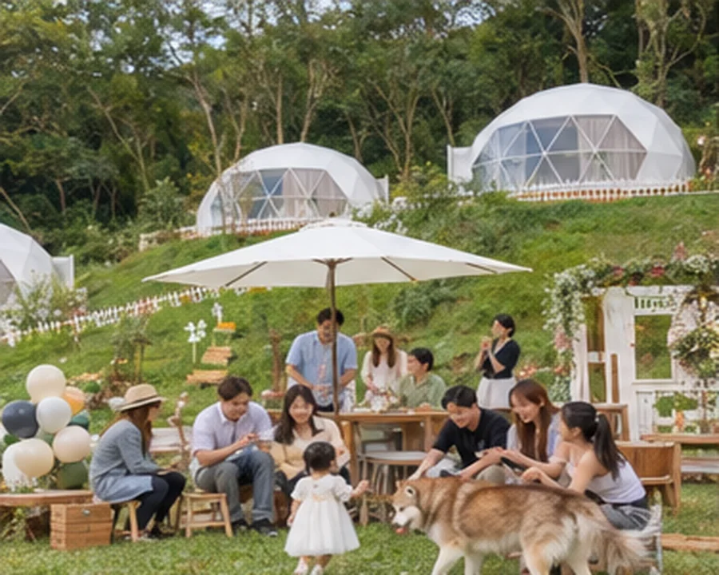

FOREST BIRTHDAY PARTY
蛋糕、聚餐、唱歌、遊戲、草地活動與戶外電影，都能在同一個森林場地完成。適合兒童生日、成人慶生、家庭聚會與朋友派對。

活動包場
使用時段為 15:00～24:00，20 人內都歡迎，停車空間可安排 6 台一般自小客車。
PARTY IDEAS
卡拉 OK、雙麥克風、Switch、電視、Apple TV 與電動麻將桌，天氣變化也有室內安排。
兩片草地都有戶外廚房，可安排烤肉、火鍋、外送、蛋糕與生日餐桌。
天黑後可以在燈串草地看電影、拍照與聊天，讓慶生活動自然延續到夜晚。
佈置蛋糕桌、草地遊戲、聊天與室內遊戲。
用餐、唱生日歌、切蛋糕與分享祝福。
戶外電影、桌遊與聊天；22:00 後進入寧靜時段。
活動主要使用熱氣球冷氣室內活動空間與兩片草地，另一處室內空間會貼心保留作為臨時置物區，讓派對用品也有地方好好收放。